Síndico profissional
Acompanhe vários condomínios no mesmo login, com agenda, manutenções e financeiro de cada um, e preste contas com relatórios prontos.
O Syndic CRM reúne financeiro, manutenções, portaria, reservas, comunicados e um assistente com IA em um só painel. Serve para acompanhar um condomínio ou vários.
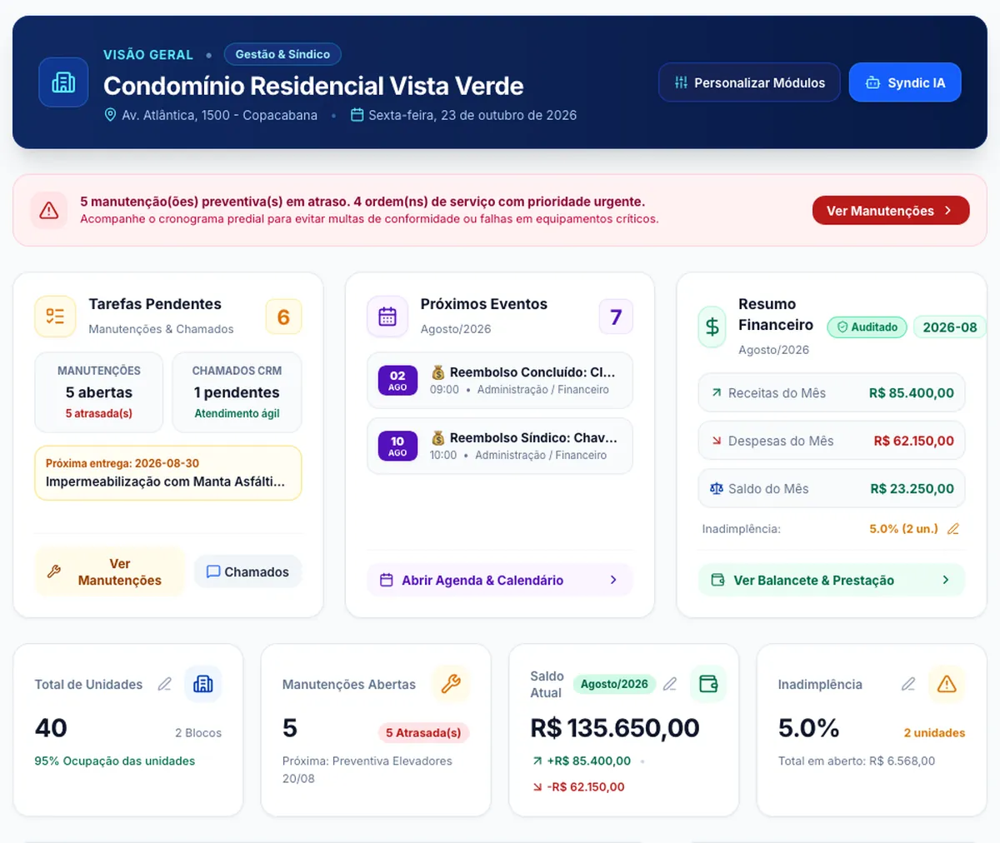
Módulos
Estas são telas reais do Syndic CRM, com dados de um condomínio de demonstração.
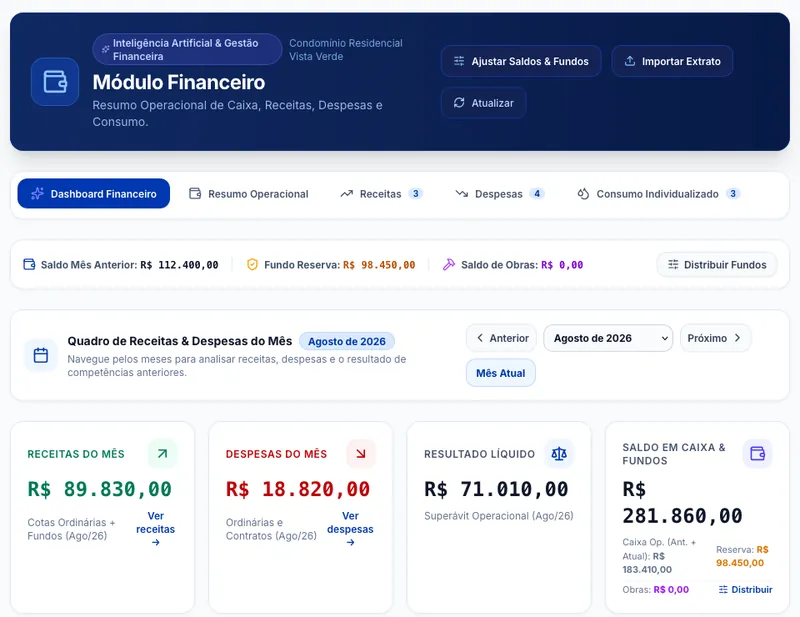
Receitas, despesas, saldos e gráficos do mês.
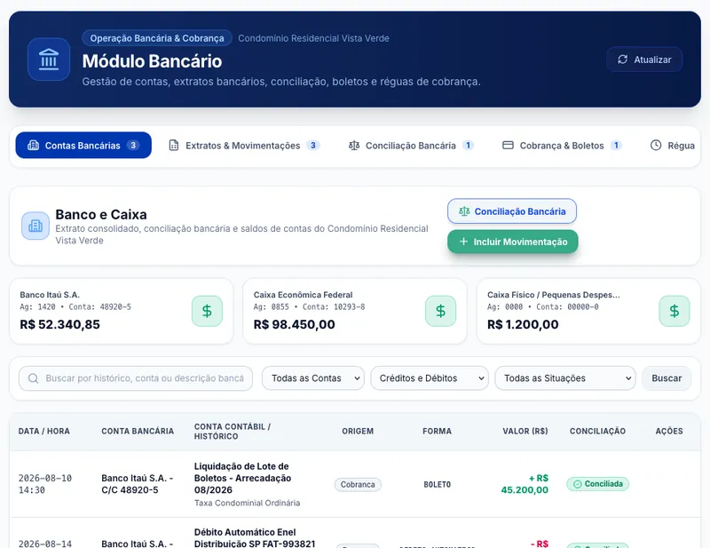
Contas, extratos, conciliação e boletos.
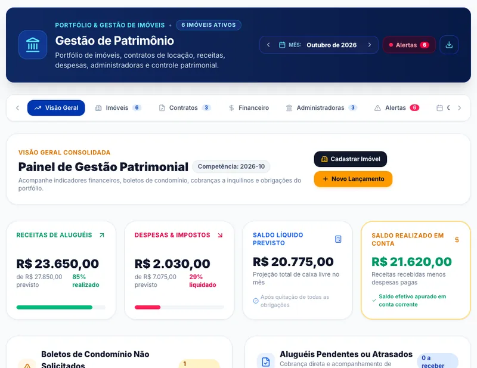
Portfólio de recursos, contratos de locação e receitas.
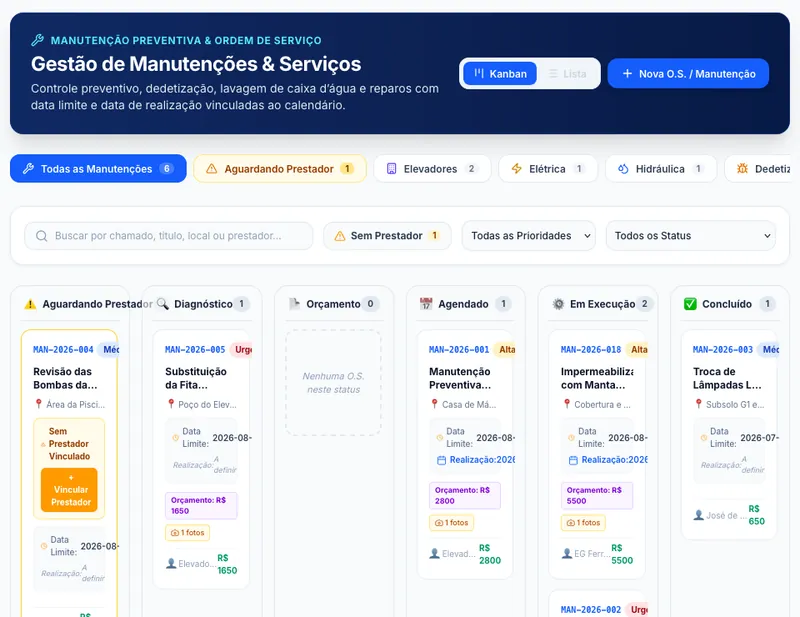
Preventivas e ordens de serviço em quadro de etapas.
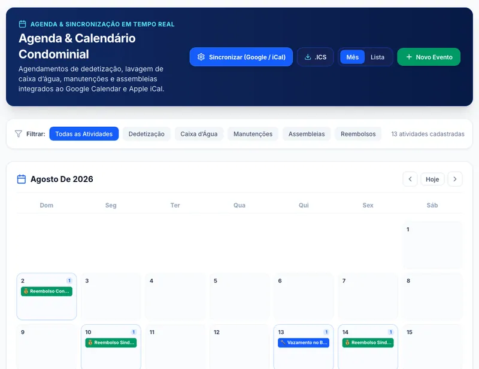
Eventos e prazos do condomínio, com sincronização com o Google Agenda.
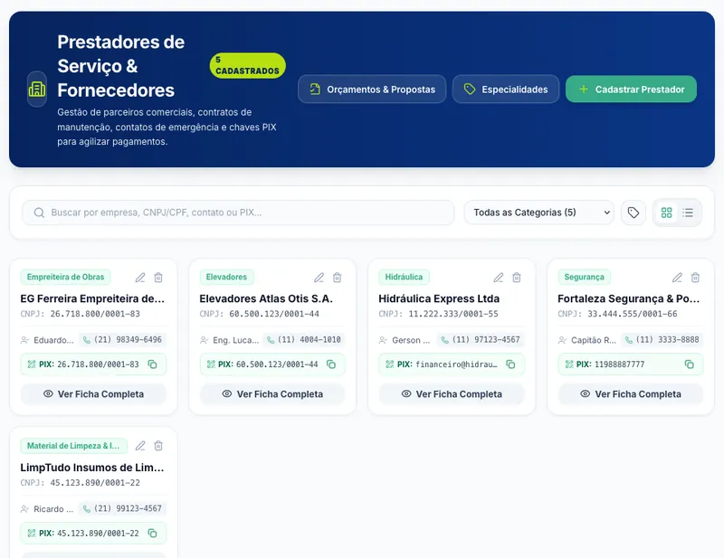
Cadastro de prestadores por especialidade.
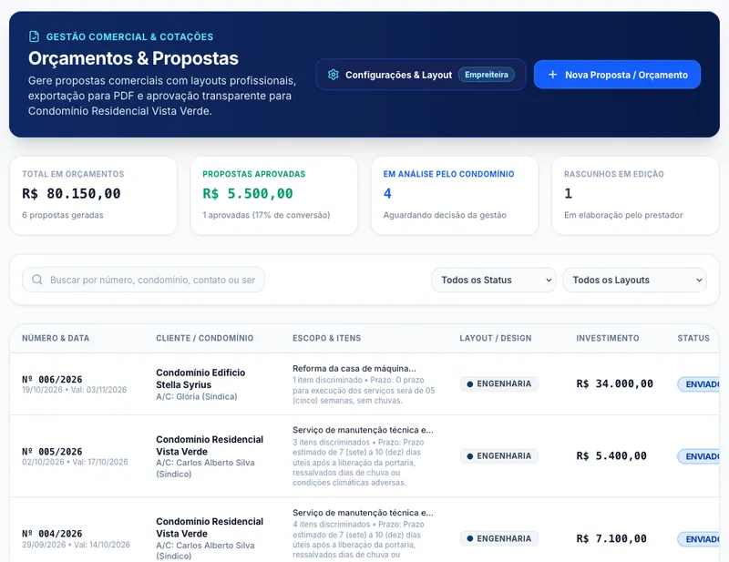
Compare os orçamentos de fornecedores lado a lado antes de decidir.
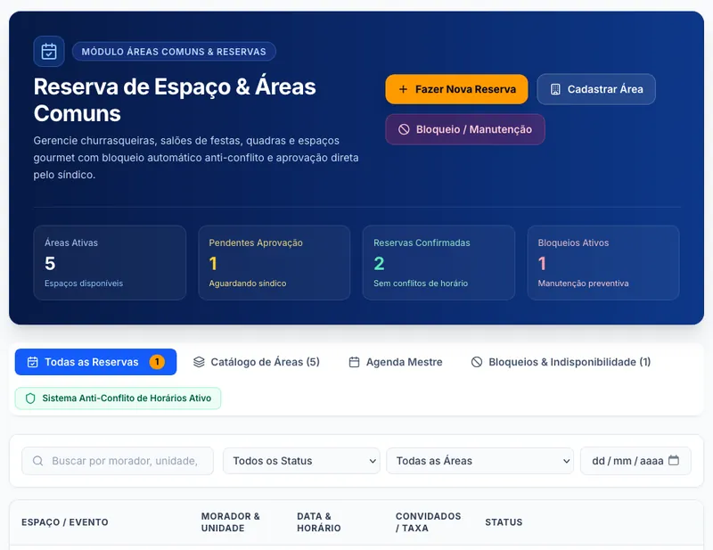
Pedidos de reserva de salão e áreas comuns, com aprovação.
Registro formal de ocorrências e sugestões.
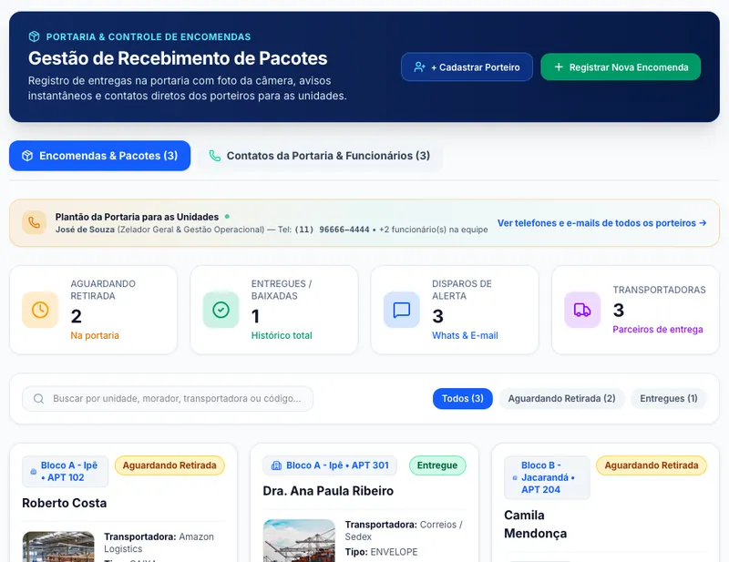
Registro de entregas na portaria e retirada.
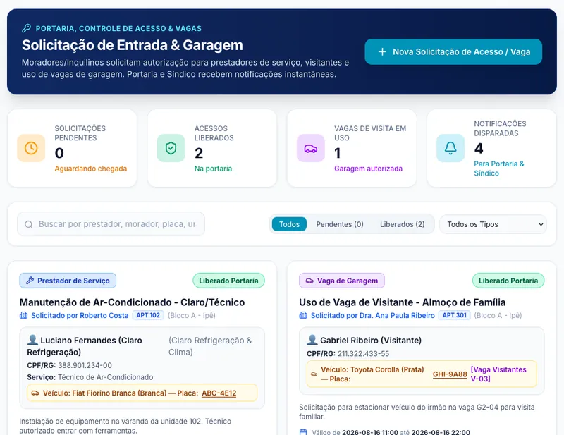
Autorização de visitantes, prestadores e vagas.
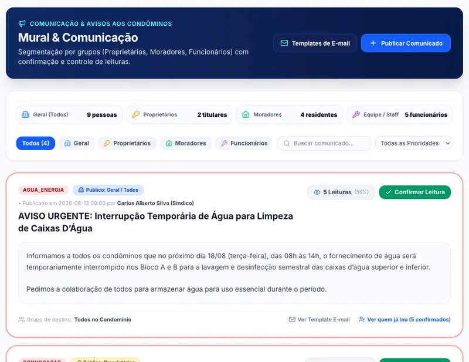
Comunicados segmentados, com leitura e enquete.
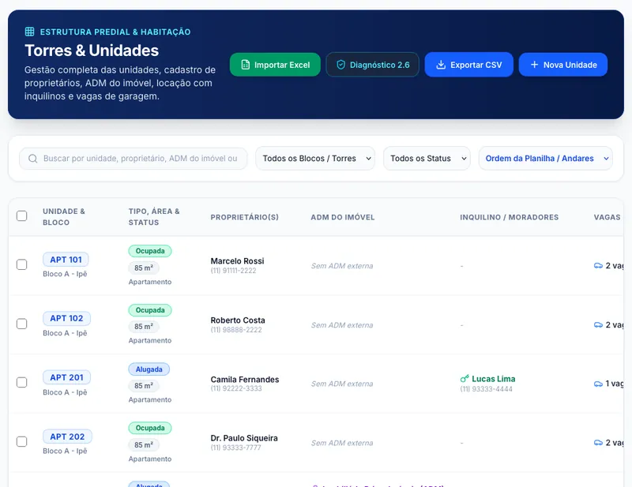
Estrutura do prédio, com importação e exportação em planilha.
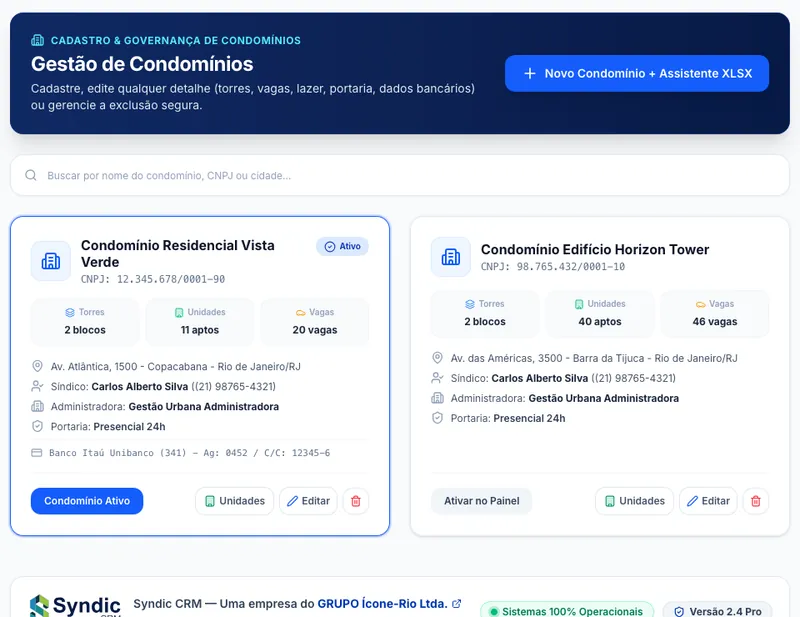
Cadastro de cada condomínio da carteira.
Inteligência artificial
O morador pergunta e o assistente responde com base na convenção, no regimento interno e nas atas do condomínio.
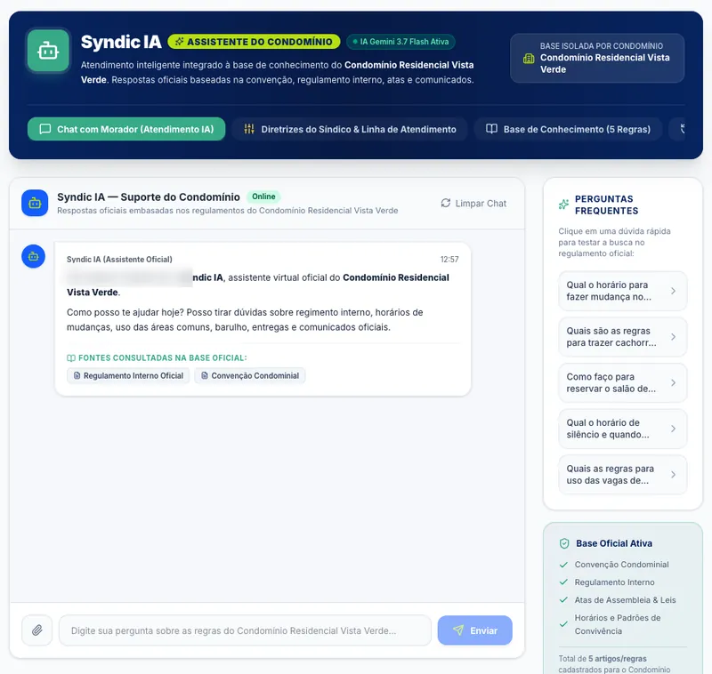
Financeiro
Do extrato bancário ao relatório para o conselho fiscal, tudo no mesmo sistema.
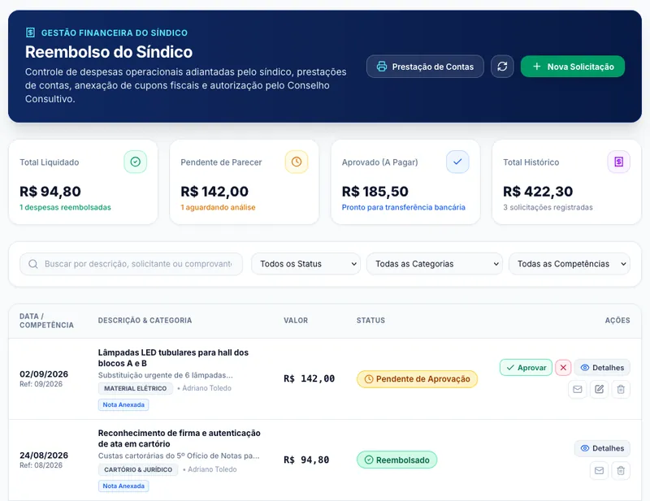
Portaria e zeladoria
A portaria monta o pedido de material, o síndico aprova e o pedido segue para o fornecedor.
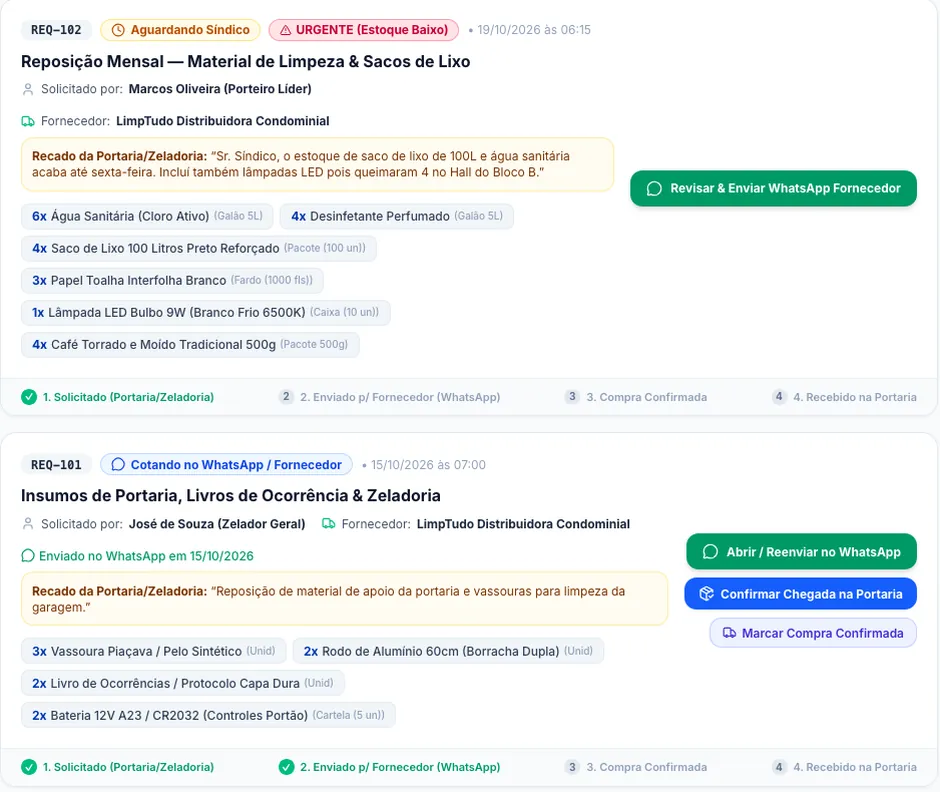
Para quem
Acompanhe vários condomínios no mesmo login, com agenda, manutenções e financeiro de cada um, e preste contas com relatórios prontos.
Centralize a carteira de condomínios, a operação da portaria, os fornecedores e a comunicação com moradores em um só sistema.
Consulte relatórios financeiros, balancete e reembolsos do síndico para acompanhar a prestação de contas.
Leia comunicados, reserve áreas comuns, autorize entradas e tire dúvidas com o Syndic IA.
Dúvidas
Sim. O sistema tem cadastro de condomínios, e o condomínio ativo é escolhido no topo da tela.
Sim. O módulo bancário reúne contas, extratos, conciliação e boletos.
Sim, em PDF e em planilha Excel.
É um assistente que responde dúvidas com base na convenção, no regimento interno e nas atas cadastradas no condomínio.
O sistema tem acessos para síndico, administradora, conselho fiscal e morador. Cada perfil vê as telas da sua função.
Ainda não para o público geral. O site está em modo standby porque o sistema ainda está em verificação. Você pode ver a demonstração e falar com a gente pelo e-mail contato@crm-syndic.com.br.
O Syndic CRM é uma empresa do Grupo Ícone-Rio, com sede em Copacabana, no Rio de Janeiro.
Demonstração
Abra a demonstração e navegue pelas telas com um condomínio de exemplo.